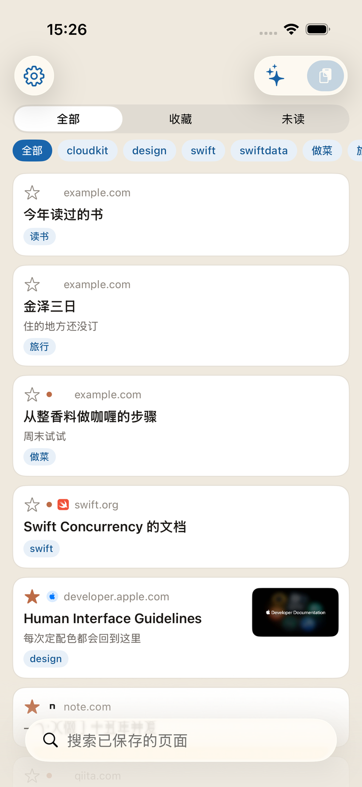
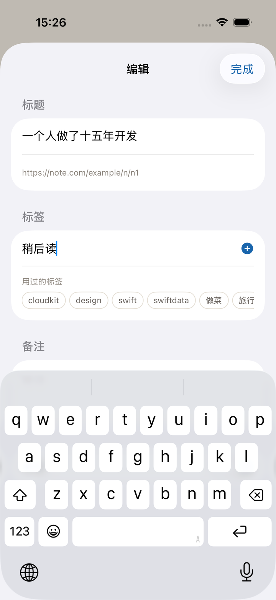
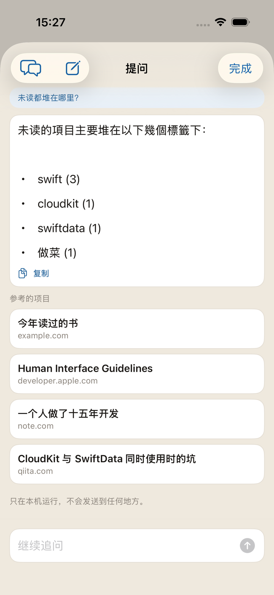
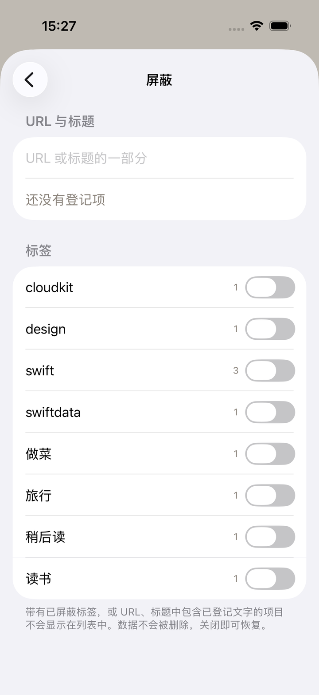
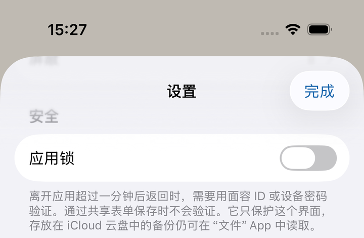

把在意的网页随手丢进去的
iPhone 书签应用。
之后用标签和备注搜索，把它挖出来。
无需注册账号 iCloud 同步 标签与备注
即将登陆 App Store

从共享表单丢进去的那一刻，保存就已经完成了。 网页的标题和图片，由应用稍后去取。 就算在信号不好的地方，保存本身也不会失败。

标题、网址、标签、备注、网页正文一并搜索。用标签筛选，用未读和收藏区分。
标签和备注，是你留给以后的自己的把手。标签想加多少都行，用过的会作为候选出现。

可以用自己的话问收藏的倾向和应用的用法。答案下方会列出参考的项目，可以直接打开。
长按一篇文章选择“摘要”，就只读这一页的正文来生成摘要。它是用来决定现在读不读的。
只在设备内运行，不会发送到外部。仅在支持 Apple Intelligence 的设备上可用。

不想看到的，可以登记网址或标题里的字符串把它藏起来。这是关闭，不是删除。
也可以按标签整体屏蔽。两种方式都保留规则，随时开关。

保存的网址，就是浏览记录本身。它不会发送到开发者的服务器—— 更准确地说，根本没有服务器。同步交给 Apple 的 iCloud。
在手边也能藏起来。打开应用锁后，每次打开会用 Face ID / Touch ID 或设备密码确认。默认是关闭的。
详情请见隐私政策。
会出现在使用同一 Apple 账户的设备上。没有注册账号这一步。
每周一次，把全部内容写成 JSON 放进 iCloud 云盘。删掉应用，备份仍在。
小组件显示未读数量。开启应用锁期间，只显示数量，不显示内容。
保存和搜索都能从快捷指令调用，也能放进自动化里。
还有一份功能一览。